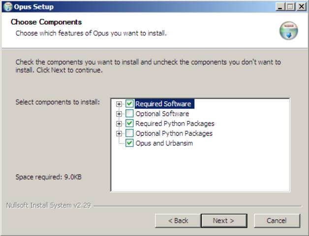

Installing Opus & UrbanSim on Windows using the Opus Installer
These following instructions are for installing Opus & UrbanSim on
Windows using the Opus Installer. These installation directions have been tested with Windows XP
and Intel processors. Note that the Opus Installer requires an internet connection during installation.
- Download the Opus Installer
- Run the Opus Installer
- Select what to install
- Test your installation
The Opus Installer can be downloaded from
here.
This will download an executable file called opus_installer.exe.
During the course of the installer, Opus and Urbansim code will be installed.
A number of programs that Opus and
Urbansim depends upon will also be installed. In order to install these other
programs, the Opus Installer will launch other installers that may require
you to click through them. With a high-speed connection, expect
installation to take around 30 minutes. The Opus Installer will also prompt
you to reboot your computer at the end of the installation process. You
should do so at your earliest convenience. The Opus and Urbansim
code can then be found in the installation directory that you specify. It
will most likely be at C:/opus_workspace.
To run the installer, double-click the opus_installer.exe file downloaded in step one.
A set of options will appear that looks like:

See the options section to determine if you have any additional
installation requirements beyond the default.
The Opus Installer will install a number of programs and components by default. The installer is
also capable of installing other programs and packages that you may wish to use.
In this section, we describe what is installed by default and the additional software that can be installed
if chosen.
Required Software (installed by default)
Opus and UrbanSim are implemented in Python. The official
Python website includes documentation, downloads, and much else. The Opus Installer will
download and install Python 2.5. If you already have Python 2.5 installed,
the installer will skip the installation process.
Optional Software
There are a few different programs that may be useful to you.
Database integration: If you require a database server to be
installed on your local machine, the Opus Installer provides options to
download MySQL or PostgreSQL. Opus-specific
configuration options for MySQL can be found
here. Opus can also interoperate with other database management
systems such as Microsoft SQL Server (MS-SQL).
R Project: If you have interest in using
the R project's environment for integrated statistical analysis
and visualization. More information can be found
here.
Required Python Packages (installed by default)
Opus and UrbanSim make heavy use of numerical
Python packages and other software. This part of the installer will
download and install these required packages. Information about each
is readily available on the internet for those interested.
Optional Python Packages
If you have set up a database server on your local machine (for example,
if you choose to do so in the installer),
or wish to communicate with a database, you will need to install the
appropriate python package. This allows Python to communicate with your database.
Install...
- psycopg, if you need to communicate with a PostgreSQL database
- MySQLdb, if you need to communicate with a MySQL database
- pyodbc, if you need to communicate with a Microsoft SQL (MS-SQL) database
You may wish to install a number of other optional python packages:
- RPy: Install this package if you have installed R (for example,
in the optional software section of this
installer). This is a Python interface for the statistical programming
language R (tested with version 0.4.6).
- PyQT: Selecting this option will install a number of components. Of most importance,
it will install QT, a framework for creating graphical user interfaces.
It also installs PyQT, which allows Python to use QT.
More information can be found at the
PyQT website.
Note: If you choose to install PyQT,
the PyQT installer will declare that it cannot find
Python 2.5 installed on your system. You should ignore this message and
continue with the installation.
- dbfpy: If you need to use .dbf files (for example, those
produced by ArcGIS), choose to install dbfpy.
Opus and Urbansim (installed by default)
The Opus Installer will download this code from the subversion repository.
For those of you who plan on doing software development,
it may be easier to follow the IDE installation
instructions for downloading, using, changing, and committing Opus code.
Currently, the installer will install the following Opus and UrbanSim specific packages:
- opus_core, which contains the fundamental Opus code
- urbansim, which contains the code for the basic UrbanSim modeling system
- eugene, an example application of UrbanSim to the Eugene, Oregon region
Follow these instructions to test if your
installation was successful.